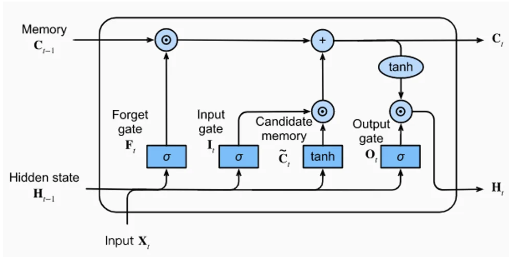

Memoria a Corto-Largo Plazo (LSTM)#
En el cuaderno anterior, presentamos la capa clásica de una RNN. Desde su invención, se han creado muchas otras capas recurrentes.
Aquí, estudiaremos la capa LSTM (Long Short-Term Memory), una alternativa a la capa RNN clásica.
¿Qué es una capa LSTM?#
La capa LSTM está compuesta por una unidad de memoria con 4 capas completamente conectadas. Tres de estas capas se utilizan para seleccionar la información relevante de los pasos anteriores: la puerta de olvido (forget gate), la puerta de entrada (input gate) y la puerta de salida (output gate).
Puerta de olvido (forget gate): Elimina información de la memoria.
Puerta de entrada (input gate): Inserta información en la memoria.
Puerta de salida (output gate): Utiliza la información almacenada.
La última capa completamente conectada genera una “información candidata” para la memoria de la capa LSTM.

Imagen extraída del artículo del blog.
Como se observa en la figura, la capa LSTM recibe 3 vectores de entrada: \(H_{t-1}\), \(C_{t-1}\) y \(X_{t}\). Los dos primeros provienen directamente de la capa LSTM, mientras que el tercero corresponde a la entrada en el tiempo \(t\) (el carácter en nuestro caso).
Para simplificar: \(H_{t-1}\) contiene la memoria a corto plazo, y \(C_{t-1}\) la memoria a largo plazo. Esto permite conservar la información importante en un contexto amplio sin descuidar el contexto local.
La idea es resolver el problema de propagación de la información en secuencias largas que presentan las RNN clásicas.
Para profundizar, puedes leer el artículo o consultar este artículo del blog.
Implementación en PyTorch#
import torch
import torch.nn as nn
Conjunto de datos#
Para crear el conjunto de datos, utilizamos nuevamente el archivo moliere.txt y reutilizamos el código del cuaderno anterior.
with open('moliere.txt', 'r', encoding='utf-8') as f:
text = f.read()
print("Nombre de caractères dans le dataset : ", len(text))
Nombre de caractères dans le dataset : 1687290
Reducimos el número de elementos para un entrenamiento rápido (descomentar si se desea entrenar con todo el conjunto).
text=text[:100000]
print("Nombre de caractères dans le dataset : ", len(text))
Nombre de caractères dans le dataset : 100000
chars = sorted(list(set(text)))
vocab_size = len(chars)
print(''.join(chars))
print("Nombre de caractères différents : ", vocab_size)
!'(),-.:;?ABCDEFGHIJLMNOPQRSTUVYabcdefghijlmnopqrstuvxyz«»ÇÈÉÊàâæçèéêîïôùû
Nombre de caractères différents : 76
stoi = { ch:i for i,ch in enumerate(chars) }
itos = { i:ch for i,ch in enumerate(chars) }
encode = lambda s: [stoi[c] for c in s] # encode : prend un string et output une liste d'entiers
decode = lambda l: ''.join([itos[i] for i in l]) # decode: prend une liste d'entiers et output un string
data = torch.tensor(encode(text), dtype=torch.long)
División en conjuntos de entrenamiento y prueba.
n = int(0.9*len(data)) # 90% pour le train et 10% pour le test
train_data = data[:n]
test = data[n:]
Creación del modelo#
Para crear el modelo, utilizamos directamente la implementación de PyTorch de la capa LSTM. A diferencia de las capas lineales o convolucionales, nn.LSTM permite apilar varias capas usando el parámetro num_layers. Si se desean definir una por una, se debe usar nn.LSTMCell.
class lstm(nn.Module):
def __init__(self, vocab_size, hidden_size,num_layers=1):
super(lstm, self).__init__()
self.hidden_size = hidden_size
# On utilise un embedding pour transformer les entiers(caractères) en vecteurs
self.embedding = nn.Embedding(vocab_size, hidden_size)
# La couche LSTM peut prendre l'argument num_layers pour empiler plusieurs couches LSTM
self.lstm = nn.LSTM(hidden_size, hidden_size, num_layers=num_layers)
# Une dernière couche linéaire pour prédire le prochain caractère
self.fc = nn.Linear(hidden_size, vocab_size)
def forward(self, x, hidden):
x = self.embedding(x)
x, hidden = self.lstm(x, hidden)
x = self.fc(x)
return x, (hidden[0].detach(), hidden[1].detach())
def init_hidden(self, batch_size):
return (torch.zeros(1, batch_size, self.hidden_size), torch.zeros(1, batch_size, self.hidden_size))
Entrenamiento#
epochs = 20
lr=0.001
hidden_dim=128
seq_len=100
num_layers=1
model=lstm(vocab_size,hidden_dim,num_layers)
criterion = torch.nn.CrossEntropyLoss()
optimizer = torch.optim.AdamW(model.parameters(), lr=lr)
La capa LSTM recibe como entrada una secuencia y devuelve una secuencia del mismo tamaño. Esto acelera el entrenamiento, ya que se pueden procesar varios ejemplos al mismo tiempo.
Nota: También se puede acelerar el entrenamiento procesando en batch varias secuencias en paralelo.
for epoch in range(epochs):
state=None
running_loss = 0
n=0
data_ptr = torch.randint(100,(1,1)).item()
# On train sur des séquences de seq_len caractères et on break si on dépasse la taille du dataset
while True:
x = train_data[data_ptr : data_ptr+seq_len]
y = train_data[data_ptr+1 : data_ptr+seq_len+1]
optimizer.zero_grad()
y_pred,state = model.forward(x,state)
loss = criterion(y_pred, y)
running_loss += loss.item()
n+=1
loss.backward()
optimizer.step()
data_ptr+=seq_len
# Pour éviter de sortir de l'index du dataset
if data_ptr + seq_len + 1 > len(train_data):
break
print("Epoch: {0} \t Loss: {1:.8f}".format(epoch, running_loss/n))
Epoch: 0 Loss: 2.17804336
Epoch: 1 Loss: 1.76270216
Epoch: 2 Loss: 1.62740668
Epoch: 3 Loss: 1.54147145
Epoch: 4 Loss: 1.47995140
Epoch: 5 Loss: 1.43100239
Epoch: 6 Loss: 1.39074463
Epoch: 7 Loss: 1.35526441
Epoch: 8 Loss: 1.32519794
Epoch: 9 Loss: 1.29712536
Epoch: 10 Loss: 1.27268774
Epoch: 11 Loss: 1.24876227
Epoch: 12 Loss: 1.22720749
Epoch: 13 Loss: 1.20663312
Epoch: 14 Loss: 1.18768359
Epoch: 15 Loss: 1.16936996
Epoch: 16 Loss: 1.15179397
Epoch: 17 Loss: 1.13514291
Epoch: 18 Loss: 1.11997525
Epoch: 19 Loss: 1.10359089
Ahora podemos evaluar la pérdida (loss) en los datos de prueba.
state=None
running_loss = 0
n=0
data_ptr = torch.randint(100,(1,1)).item()
while True:
with torch.no_grad():
x = test[data_ptr : data_ptr+seq_len]
y = test[data_ptr+1 : data_ptr+seq_len+1]
y_pred,state = model.forward(x,state)
loss = criterion(y_pred, y)
running_loss += loss.item()
n+=1
data_ptr+=seq_len
if data_ptr + seq_len + 1 > len(test):
break
print("Loss de test: {0:.8f}".format(running_loss/n))
Loss de test: 1.51168611
El modelo presenta un sobreajuste considerable… Intenta corregirlo por tu cuenta.
Generación#
¡Ahora podemos probar la generación de texto!
import torch.nn.functional as F
moliere='.'
sequence_length=250
state=None
for i in range(sequence_length):
x = torch.tensor(encode(moliere[-1]), dtype=torch.long).squeeze()
y_pred,state = model.forward(x.unsqueeze(0),state)
probs=F.softmax(torch.squeeze(y_pred), dim=0)
sample=torch.multinomial(probs, 1)
moliere+=itos[sample.item()]
print(moliere)
.
Çà coeuse, et bon enfin l'avoir faire.
MASCARILLE.
En me donner d vous, Le pas.
MASCARILLE, à dans un pour sûte matinix! cette ma foi.
PANDOLFE.
Ma foi, tu te le sy sois touves d'arrête sa bien sans les bonheur.
MASCARILLE.
Moi, je me suis to
La generación es un poco mejor que la del modelo RNN básico, pero aún no es convincente. Puedes intentar mejorar el rendimiento modificando los parámetros (número de capas en serie, dimensión oculta, etc.).